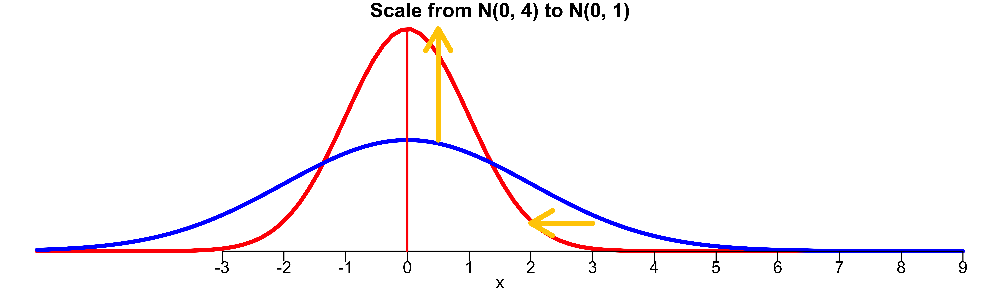
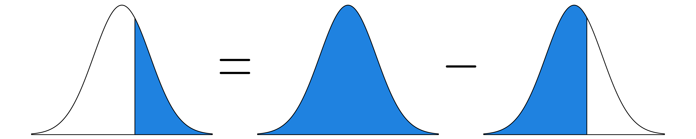

Probability Distributions
MATH 4720/MSSC 5720 Introduction to Statistics
Random Variables
Random Variables
- Recap: A variable in a data set is a characteristic that varies from one to another.
- A variable can be either categorical or numerical.
- Numerical variables can be either discrete or continuous.
. . .
- A random variable, usually written as \(X\) 1, is a variable whose possible values are numerical outcomes determined by chance or randomness of a procedure or experiment.
- Toss a coin 2 times. \(X\) = # of heads.
- \(X\) = # of accidents in W. Wisconsin Ave. per day.
- A random variable has a probability distribution associated with it, accounting for its randomness.
- Similar to relative frequency table (distribution)
- A probability distribution is the mathematical function that gives the probabilities of occurrence of different possible outcomes for an experiment in terms of values of r.v. X. Yes. The possible values of \(X\) are numerical \(X = 0, 1, 2\) that are determined by randomness of the tossing-coin experiment.
Discrete and Continuous Random Variables
A discrete random variable takes on a finite or countable number of values.
A continuous random variable has infinitely many values, and the collection of values is uncountable.
. . .
-
The number of relationships you’ve ever had is discrete variable because we can count the number and it is finite.
- If we can further determine the probability that the number is 0, 1, 2, or any possible number, it is a discrete random variable.
-
Height is continuous because it can be any number within a range.
- If we have a way to quantify the probability that the height is from any value \(a\) to any value \(b\), it is a continuous random variable.
Probability Distributions
Discrete Distributions
Continuous Distributions
A Statistician Should Know
- There are lots of well-known probability distributions out there.
- The distributions shown here are just a small part of probability distributions
- In fact there are infinitely many probability distributions.
- A function that satisfies probability distribution conditions is a probability distribution.
- You can construct our own probability distribution.
What We Learn Here
Binomial Distribution
Poisson Distribution
Normal Distribution
Discrete Probability Distributions
Discrete Probability Distribution
The probability (mass) function (pf, pmf) of a discrete random variable (r.v.) \(X\) is a function \(P(X = x)\) (or \(p(x)\)) that assigns a probability for every possible number \(x\).
The probability distribution for a discrete r.v. \(X\) displays its probability function.
The display can be a table, graph, or mathematical formula of \(P(X = x)\).
. . .
Example: 🪙🪙 Toss a fair coin twice independently and \(X\) is the number of heads.
- The probability distribution of \(X\) as a table is
| x | 0 | 1 | 2 |
| P(X = x) | 0.25 | 0.5 | 0.25 |
. . .
👉 \(\{X = x\}\) is an event corresponding to an event of some experiment.
. . .
What is the event that \(\{X = 0\}\) corresponds to?
. . .
How do we get \(P(X = 0)\), \(P(X=1)\) and \(P(X=2)\) ?
Discrete Probability Distribution as a Graph

-
\(0 \le P(X = x) \le 1\) for every value \(x\) of \(X\).
- \(x = 0, 1, 2\)
. . .
-
\(\sum_{x}P(X=x) = 1\), where \(x\) assumes all possible values.
- \(P(X=0) + P(X = 1) + P(X = 2) = 1\)
. . .
- The probabilities for a discrete r.v. are additive because \(\{X = a\}\) and \(\{X = b\}\) are disjoint for any possible values \(a \ne b\).
- \(P(X = 1 \text{ or } 2) = P(\{X = 1\} \cup \{X = 2\}) = P(X = 1) + P(X = 2)\).
Mean of a Discrete Random Variable
Suppose \(X\) takes values \(x_1, \dots, x_k\) with probabilities \(P(X = x_1), \dots, P(X = x_k)\).
The mean or expected value of \(X\) is the sum of each outcome multiplied by its corresponding probability: \[E(X) := x_1 \times P(X = x_1) + \dots + x_k \times P(X = x_k) = \sum_{i=1}^kx_iP(X=x_i)\]
The Greek letter \(\mu\) may be used in place of the notation \(E(X)\).
- Give an example
. . .
👉 The mean of a discrete random variable \(X\) is the weighted average of possible values \(x\) weighted by their corresponding probability.
. . .
What is the mean of \(X\) (the number of heads) in the previous example?
- On average, we will see one heads comes up when we toss a fair coin twice.
Variance of a Discrete Random Variable
Suppose \(X\) takes values \(x_1, \dots , x_k\) with probabilities \(P(X = x_1), \dots, P(X = x_k)\) and expected value \(\mu = E(X)\).
The variance of \(X\), denoted by \(\mathrm{Var}(X)\) or \(\sigma^2\), is \[\small \mathrm{Var}(X) := (x_1 - \mu)^2 \times P(X = x_1) + \dots + (x_k - \mu)^2 \times P(X = x_k) = \sum_{i=1}^k(x_i - \mu)^2P(X=x_i)\]
The standard deviation of \(X\), \(\sigma\), is the square root of the variance.
. . .
👉 The variance of a discrete random variable \(X\) is the weighted sum of squared deviation from the mean weighted by probability values.
. . .
What is the variance of \(X\) (the number of heads) in the previous example?
Binomial Distribution
Binomial Experiment and Random Variable
- A binomial experiment is the one having the following properties:
- 👉 The experiment consists of a fixed number of identical trials \(n\).
- 👉 Each trial results in one of exactly two outcomes (success (S) and failure (F)).
- 👉 Trials are independent, meaning that the outcome of any trial does not affect the outcome of any other trial.
- 👉 The probability of success is constant for all trials.
- If \(X\) is defined as the number of successes observed in \(n\) trials , \(X\) is a binomial random variable.
. . .
- The word success just means one of the two outcomes, and does not necessarily mean something good.
- 😲 Can define Drug abuse as success and No drug abuse as failure.
if smoking and non-smoking are the only two outcomes of some binomial experiment.
Binomial Distribution
-
The probability function \(P(X = x)\) of a binomial r.v. \(X\) can be fully determined by
- the number of trials \(n\)
- probability of success \(\pi\)
Different \((n, \pi)\) pairs generate different binomial probability distributions.
\(X\) is said to follow a binomial distribution with parameters \(n\) and \(\pi\), written as \(\color{blue}{X \sim binomial(n, \pi)}\).
The binomial probability function is \[ \color{blue}{P(X = x \mid n, \pi) = \frac{n!}{x!(n-x)!}\pi^x(1-\pi)^{n-x}, \quad x = 0, 1, 2, \dots, n}\] with mean \(\mu = E(X) = n\pi\) and variance \(\sigma^2 = \mathrm{Var}(X) = n\pi(1-\pi)\).
- Once \((n, \pi)\) is fixed, we know exactly what the distribution looks like, and we can form a table, graph, and provide a mathematical formula of the binomial distribution.
. . .
Tossing a fair coin two times independently. Let \(X =\) # of heads. Is \(X\) a binomial r.v.?
- Example: Toss a fair coin two times independently.
- \(X =\) # of heads
- \(X \sim binomial(n=2, \pi=1/2)\)
Binomial Distribution Example
Assume that 20% of all drivers have a blood alcohol level above the legal limit. For a random sample of 15 vehicles, compute the probability that:
Exactly 6 of the 15 drivers will exceed the legal limit.
Of the 15 drivers, 6 or more will exceed the legal limit.

. . .
Suppose it is a binomial experiment with \(n = 15\) and \(\pi = 0.2\).
Let \(X\) be the number of drivers exceeding limit.
\(X \sim binomial(15, 0.2)\).
\[ \color{blue}{P(X = x \mid n=15, \pi=0.2) = \frac{15!}{x!(15-x)!}(0.2)^x(1-0.2)^{15-x}, \quad x = 0, 1, 2, \dots, 15}\]
- On a particular roadway, assume that 20% of all drivers have a blood alcohol level above the legal limit.
- All 15 drivers will have a blood alcohol level within the legal limit.
Binomial Distribution Example \(X \sim binomial(15, 0.2)\)

Binomial Distribution Example
Assume that 20% of all drivers have a blood alcohol level above the legal limit. For a random sample of 15 vehicles, compute the probability that:
Exactly 6 of the 15 drivers will exceed the legal limit.
Of the 15 drivers, 6 or more will exceed the legal limit.
On a particular roadway, assume that 20% of all drivers have a blood alcohol level above the legal limit.
Suppose it is a binomial experiment with \(n = 15\) and \(\pi = 0.2\).
Let \(X\) be the number of drivers exceeding limit. Then \(X \sim binomial(15, 0.2)\).
. . .
- \(\small P(X = 6) = \frac{n!}{x!(n-x)!}\pi^x(1-\pi)^{n-x} = \frac{15!}{6!(15-6)!}(0.2)^6(1-0.2)^{15-6} = 0.043\)
. . .
- \(\small P(X \ge 6) = p(6) + \dots + p(15) = 1 - P(X \le 5) = 1 - (p(0) + p(1) + \dots + p(5)) = 0.0611\)
- All 15 drivers will have a blood alcohol level within the legal limit.
- \(\small P(X = 0) = \frac{15!}{0!(15-0)!}(0.2)^0(1-0.2)^{15-0} = 0.0352\)
- \(P(X \ge 6) = 1 - P(X \le 5)\) very useful trick
- Calculation is super tedious, even you use a calculator!
. . .
Never do this by hand. We compute them using R!
Binomial Example Computation in R
- With
sizethe number of trials andprobthe probability of success,-
dbinom(x, size, prob)to compute \(P(X = x)\) -
pbinom(q, size, prob)to compute \(P(X \le q)\) -
pbinom(q, size, prob, lower.tail = FALSE)to compute \(P(X > q)\)
-
Binomial(15, 0.2)

- Since \(n = 15\) and \(\pi = 0.2\), mean is 3.
- Most of the probabilities are around \(x = 3\).
- It’s very uncommon to see that more than 10 drivers have alcohol level above the legal limit.
Poisson Distribution
Poisson Random Variables
- If we’d like to count the number of occurrences of some event over a unit of time period or space (region) and calculate its associated probability, we could consider the Poisson distribution.
- Number of COVID patients arriving at ICU in one hour
- Number of Marquette students logging onto D2L in one day
- Number of dandelions per square meter in Marquette campus
. . .
- Let \(X\) be a Poisson r.v. Then \(\color{blue}{X \sim Poisson(\lambda)}\), where \(\lambda\) is the parameter representing the mean number of occurrences of the event in the interval. \[\color{blue}{P(X = x \mid \lambda) = \frac{\lambda^x e^{-\lambda}}{x!}, \quad x = 0, 1, 2, \dots}\] with both mean and variance being equal to \(\lambda\).
- Let \(X\) be a Poisson r.v. representing the number of occurrences of some event over a unit of interval (time, space, volume).
Assumptions and Properties of Poisson Variables
👉 Events occur one at a time; two or more events do not occur at the same time or in the same space or spot.
👉 The occurrence of an event in a given period of time or region of space is independent of the occurrence of the event in a nonoverlapping time period or region of space.
👉 \(\lambda\) is constant of any period or region.
- You cannot say two patients arrived at ICU at the same time.
- You can always know which patient arrives at ICU earlier.
- You can always know which students log in D2L earlier
. . .
Can you find the difference between binomial and Poisson distributions?
. . .
- The Poisson distribution
- is determined by one single parameter \(\lambda\)
- has possible values \(x = 0, 1, 2, \dots\) with no upper limit (countable), while a binomial variable has possible values \(0, 1, 2, \dots, n\) (finite)
Poisson Distribution Example
Last year there were 4200 births at the University of Wisconsin Hospital. Assume \(X\) be the number of births in a given day at the center, and \(X \sim Poisson(\lambda)\). Find
- \(\lambda\), the mean number of births per day.
- the probability that on a randomly selected day, there are exactly 10 births.
- \(P(X > 10)\)?

. . .
- \(\small \lambda = \frac{\text{Number of birth in a year}}{\text{Number of days}} = \frac{4200}{365} = 11.5\)
. . .
- \(\small P(X = 10 \mid \lambda = 11.5) = \frac{\lambda^x e^{-\lambda}}{x!} = \frac{11.5^{10} e^{-11.5}}{10!} = 0.113\)
. . .
- \(\small P(X > 10) = p(11) + p(12) + \cdots + p(20) + \cdots\) (No end!) \(\small P(X > 10) = 1 - P(X \le 10) = 1 - (p(0) + p(1) + p(2) + \dots + p(10))\).
.tip[ I know you are waiting for R implementation!
Poisson Example Compuatation in R
- With
lambdathe mean of Poisson distribution,-
dpois(x, lambda)to compute \(P(X = x)\) -
ppois(q, lambda)to compute \(P(X \le q)\) -
ppois(q, lambda, lower.tail = FALSE)to compute \(P(X > q)\)
-
Poisson(11.5)
- \(X\) has no upper limit. The graph is truncated at \(x = 24\).

Continuous Probability Distributions
Continuous Probability Distributions
A continuous r.v. can take on any values from an interval of the real line.
Instead of probability functions, a continuous r.v. \(X\) has the probability density function (pdf) \(f(x)\) such that for any real value \(a < b\), \[P(a < X < b) = \int_{a}^b f(x) dx\]
The cumulative distribution function (cdf) of \(X\) is defined as \[F(x) := P(X \le x) = \int_{-\infty}^x f(t)dt\]
. . .
- Every pdf must satisfy (1) \(f(x) \ge 0\) for all \(x\); (2) \(\int_{-\infty}^{\infty} f(x) dx = 1\)
. . .
😎 Luckily we don’t deal with integrals in this course.
Density Curve
A pdf generates a graph called the density curve that shows the likelihood of a random variable at all possible values.
\(P(a < X < b) = \int_{a}^b f(x) dx\): The area under the density curve between \(a\) and \(b\).
\(\int_{-\infty}^{\infty} f(x) dx = 1\): The total area under any density curve is equal to 1.

- ** \(P(a < X < b)\) is the area under the density curve between \(a\) and \(b\).**
- The total area under any density curve is equal to 1.
Commonly Used Continuous Distributions
In this course, we will touch normal (Gaussian), Student’s t, chi-squared, F
Some other common distributions include uniform, exponential, gamma, beta, inverse gamma, Cauchy, etc. (MATH 4700)
Normal (Gaussian) Distribution
- The normal distribution, \(N(\mu, \sigma^2\)), has the pdf given by \[\small f(x) = \frac{1}{\sqrt{2\pi}\sigma}e^{\frac{-(x-\mu)^2}{2\sigma^2}}, \quad -\infty < x < \infty\]
- Two parameters mean \(\mu\) and variance \(\sigma^2\) (standard deviation \(\sigma\))
- Always bell shaped, and symmetric about the mean \(\mu\)
- When \(\mu = 0\) and \(\sigma = 1\), \(N(0, 1)\) is called standard normal.

Normal Density Curves

Standardization and Z-Scores
Standardization: Convert \(N(\mu, \sigma^2)\) to \(N(0, 1)\).
Why standardization: Put data onto a standardized scale, making comparisons easier!
| Measure | SAT | ACT |
|---|---|---|
| Mean | 1100 | 21 |
| SD | 200 | 6 |
The distribution of SAT and ACT scores are both nearly normal.
Suppose Anna scored 1300 on her SAT and Tommy scored 24 on his ACT. Who performed better?

- For normal distribution, we usually do the so-called Standardization.
- The idea is to Make a normal distribution standard normal, i.e., convert \(N(\mu, \sigma^2)\) to \(N(0, 1)\).
- But why do we want to do that?
- Well, by doing so, we can put any data onto a standardized scale, making comparisons easier and reasonable.
- The distribution of SAT and ACT scores are both nearly normal.
- Suppose Anna scored 1300 on her SAT and Tommy scored 24 on his ACT. Who performed better?
- It’s hard to compare the two scores, right? because they are on the different scales.
- And standardization helps us compare Anna and Tommy’s performance because we are gonna put their scores on the same scale. Let’s see how.
Standardization and Z-Scores
If \(x\) is an observation from a distribution with mean \(\mu\) and standard deviation \(\sigma\), the standardized value of \(x\) is so-called \(z\)-score: \[z = \frac{x - \mu}{\sigma}\]
-
A \(z\)-score tells us how many standard deviations \(x\) falls away from the mean, and in which direction.
- Observations larger (smaller) than the mean have positive (negative) \(z\)-scores.
- A \(z\)-score -1.2 means that \(x\) is 1.2 standard deviations to the left of (below) the mean.
- A \(z\)-score 1.8 means that \(x\) is 1.8 standard deviations to the right of (above) the mean.
If \(X \sim N(\mu, \sigma^2)\), \(Z = \frac{X - \mu}{\sigma}\) follows the standard normal distribution, i.e., \(Z \sim N(0, 1)\).
- If z-score is positive, it means that the original x is greater the mean.
- Since we divided by sigma, the standardized value is measured using SD as the unit.
- A \(z\)-score tells us how many standard deviations the original observation \(x\) falls away from the mean, and in which direction.
- Observations larger (smaller) than the mean have positive (negative) \(z\)-scores.
- A \(z\)-score -1.2 means that \(x\) is 1.2 standard deviations to the left of (below) the mean.
- A \(z\)-score 1.8 means that the original observation \(x\) is 1.8 standard deviations to the right of (above) the mean.
- If \(X \sim N(\mu, \sigma^2)\), \(Z = \frac{X - \mu}{\sigma}\) follows the standard normal distribution, i.e., \(Z \sim N(0, 1)\).
Standardization Illustration
- \(X - \mu\) shifts the mean from \(\mu\) to 0

. . .
- \(\frac{X - \mu}{\sigma}\) scales the variation from 4 to 1

Standardization Illustration
A value of \(x\) that is 2 standard deviation below \(\mu\) corresponds to \(z = -2\).
\(z = \frac{x -\mu}{\sigma} \iff x = \mu + z\sigma\). If \(z = -2\), \(x = \mu - 2\sigma\).

SAT and ACT Example
- \(z_{A} = \frac{x_{A} - \mu_{SAT}}{\sigma_{SAT}} = \frac{1300-1100}{200} = 1\); \(z_{T} = \frac{x_{T} - \mu_{ACT}}{\sigma_{ACT}} = \frac{24-21}{6} = 0.5\).

- After standardizing SAT and ACT distributions, we can compare SAT and ACT scores together.
- The z-score for Anna is 1, so her SAT score is 1 SD above the mean of SAT.
- The z-score for Tommy is 0.5, so his ACT score is 0.5 SD above the mean of ACT.
- Originally, SAT and ACT are two different distributions with different scales.
- But now we convert both distributions to standard normal distributions, so that they can be compared.
- Because Anna’s score is 1 sd higher than the mean, and Tommy’s socre is 0.5 sd higher than the mean, we conclude that Anna performed better on the test.
An observation x1 is said to be more unusual than another observation x2 if the absolute value of its Zscore is larger than the absolute value of the other observation’s Z-score.
Finding Tail Areas \(P(X < x)\)
What fraction of students have an SAT score below Anna’s score of 1300?
This is the same as the percentile Anna is at, which is the percentage of cases that have lower scores than Anna.
Need \(P(X < 1300 \mid \mu = 1100, \sigma = 200)\) or \(P(Z < 1 \mid \mu = 0, \sigma = 1)\).

- If there are 100 test takers, how many students score are lower than Anna’s score? It’s very useful in statistics to be able to identify tail areas of distributions. For instance, what fraction of people have an SAT score below Anna’s score of 1300? This is the same as the percentile Anna is at, which is the percentage of cases that have lower scores than Anna. We can visualize such a tail area like the curve and shading shown in Figure 4.6.
- The area to the left of Z represents the fraction of people who scored lower than Anna.
Finding Tail Areas \(P(X < x)\) in R
- With
meanandsdrepresenting the mean and standard deviation of a normal distribution-
pnorm(q, mean, sd)to compute \(P(X \le q)\) -
pnorm(q, mean, sd, lower.tail = FALSE)to compute \(P(X > q)\)
-
. . .

- Don’t forget R Shiny app is at Normal Calculator
- The default values of
meanandsdare 0 and 1 respectively, i.e., \(N(0, 1)\). - It is rarely used in practice, but you can find tail areas using the normal table (Table 1 in the textbook.)
SAT Example Cont’d
- SAT score follows \(N(1100, 200^2)\). Shannon is a SAT taker, and nothing is known about Shannon’s SAT aptitude. What is the probability Shannon SAT scores at least 1190?

SAT Example Cont’d
- SAT score follows \(N(1100, 200^2)\). Shannon is a SAT taker, and nothing is known about Shannon’s SAT aptitude. What is the probability Shannon SAT scores at least 1190?
-
Step 1: State the problem
- We like to compute \(P(X \ge 1190)\).
- Step 2: Draw a picture

- Step 3: Find the area
We want the upper tail area, so lower.tail = FALSE!
pnorm(q = 1190, mean = 1100, sd = 200,
lower.tail = FALSE)[1] 0.326SAT Example Cont’d

-
Step 3: Find \(z\)-score :
- \(z = \frac{1190 - 1100}{200} = 0.45\) and we like to compute \(P(X > 1190) = P\left( \frac{X - \mu}{\sigma} > \frac{1190 - 1000}{200} \right) = P(Z > 0.45) = 1 - P(Z \le 0.45)\)
- Step 4: Find the area using
pnorm()
1 - pnorm(0.45)[1] 0.326Normal Percentiles in R
- To get the \(100p\)-th percentile (or the \(p\)-quantile \(q\)), given probability \(p\), we use
-
qnorm(p, mean, sd)to get a value of \(X\), \(q\), such that \(P(X \le q) = p\) -
qnorm(p, mean, sd, lower.tail = FALSE)to get \(q\) such that \(P(X \ge q) = p\)
-
We may be also interested in the value of \(X\) given a probability or percentage.
-
In other words, we’d like to find the \(100p\)-th percentile given the probability \(p\).
SAT Example
What is the 95th percentile for SAT scores?
Find a value \(q\) of the normal random variable, not an area (probability), which is 0.95.

SAT Example Cont’d
-
Step 3: Find \(z\)-score s.t. \(P(Z < z) = 0.95\) using
qnorm():
(z_95 <- qnorm(0.95))[1] 1.64-
Step 4: Find the \(x\) of the original scale
- \(z_{0.95} = \frac{x-\mu}{\sigma}\). So \(x = \mu + z_{0.95}\sigma\).
(x_95 <- 1100 + z_95 * 200)[1] 1429- The 95th percentile for SAT scores is 1429.
. . .
qnorm(p = 0.95, mean = 1100, sd = 200)[1] 1429Finding Probabilties
👉 Draw and label the normal curve and shade the area of interest.
- 👉 Less than
- \(\small P(X < x) = P(Z < z)\)
pnorm(z)pnorm(x, mean = mu, sd = sigma)
- 👉 Greater than
- \(\small P(X > x) = P(Z > z) = 1 - P(Z \le z)\)
1 - pnorm(z)
👉 Standardization is not a must.
👉 We have to specify the mean and SD of the original distribution of \(X\), like
pnorm(x, mean = mu, sd = sigma).
Finding Probabilties
- 👉 Between two numbers
- \(\small P(a < X < b) = P(z_a < Z < z_b) = P(Z < z_b) - P(Z < z_a)\)
pnorm(z_b) - pnorm(z_a)
- 👉 Outside of two numbers \((a < b)\) \[\small \begin{align} P(X < a \text{ or } X > b) &= P(Z < z_a \text{ or } Z > z_b) \\ &= P(Z < z_a) + P(Z > z_b) \\ &= P(Z < z_a) + 1 - P(Z < z_b) \end{align}\]
pnorm(z_a) + 1 - pnorm(z_b)pnorm(z_a) + pnorm(z_b, lower.tail = FALSE)
👉 Any probability can be computed using the “less than” form (lower or left tail).
👉 If the calculation involves the “greater than” form, add
lower.tail = FALSEinpnorm().
Checking Normality: Normal Quantile Plot
Many statistical methods assume variables are normally distributed.
Testing the appropriateness of the normal assumption is a key step.
-
A normal quantile plot (normal probability plot) or a Quantile-Quantile plot (QQ plot) helps us check normality assumption.
- \(X\)-axis: Quantiles of the ordered data if the data were normally distributed.
- \(Y\)-axis: Ordered data values
If the data are like normally distributed, the points on the QQ plot will lie close to a straight line.
- Many statistical methods assume variables are normally distributed.
- Testing the appropriateness of the normal assumption is a key step in many data analyses.
- A normal quantile plot (normal probability plot) or a Quantile-Quantile plot (QQ plot) consists of a plot of the ordered data on the Y-axis and the \(z\)-scores associated with order of the observations on the X-axis.
- If the distribution of the data is close to a normal distribution, the plotted points on the QQ plot will lie close to a straight line.
QQ plot in R

Footnotes
Usually in statistics, a capital \(X\) represents a random variable and a small \(x\) represents a realized value of \(X\).↩︎